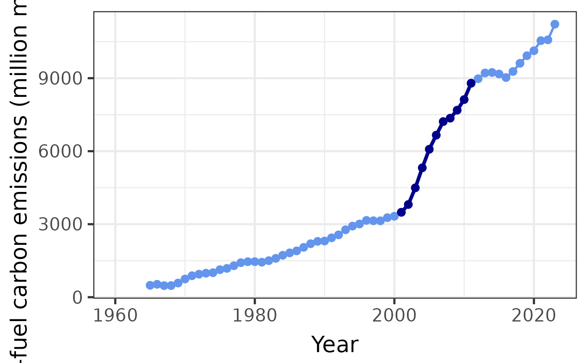
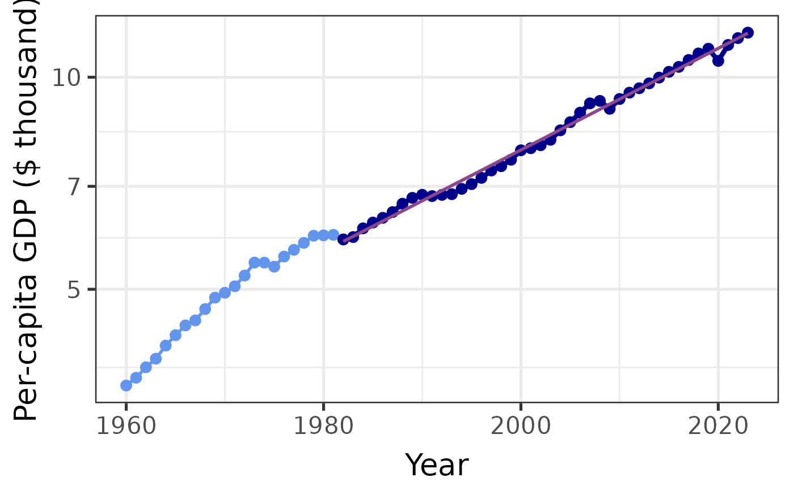

Plot Kaya-identity variable
plot_kaya(
data,
variable,
start_year = NA,
stop_year = NA,
y_lab = NULL,
log_scale = FALSE,
trend_line = FALSE,
points = TRUE,
font_size = 20,
colors = NULL,
pre_color = NULL,
post_color = NULL,
in_range_color = NULL,
trend_color = NULL,
line_sizes = NULL,
pre_line_size = NULL,
post_line_size = NULL,
in_range_line_size = NULL,
trend_line_size = NULL,
point_sizes = NULL,
pre_point_size = NULL,
post_point_size = NULL,
in_range_point_size = NULL
)A tibble with Kaya-identity data or the name of a region or a region code.
The name of the variable to plot (character)
The year to start highlighting the data (should correspond
to the beginning of the trend calculation). Set to NULL to turn off
highlighting.
The year to stop highlighting the data (should correspond
to the beginning of the trend calculation). Set to NULL to turn off
highlighting.
Optional label for the y-axis
Use log scale for y axis
Include a trend line
Plot points in addition to the line.
Base size of the font for axis labels and titles.
Named vector of colors to use for the plot. Elements should
include
PRE, POST, IN-RANGE, and TREND,
which respectively give the colors for the portion of the plot before
start_year, after stop_year, between start_year and stop_year,
and the trend line.
Override default color for the portion of the chart before
start_year.
Override default color for the portion of the chart after
stop_year.
Override default color for the portion of the chart
between start_year and stop_year.
Override default color for the trend line.
Named vector of sizes to use for the lines in the plot.
Elements should include
PRE, POST, IN-RANGE, and TREND,
which respectively give the sizes for lines in the portion of the plot
before start_year, after stop_year, between
start_year and stop_year, and the trend line.
Override default line size for the portion of the chart
before start_year.
Override default line size for the portion of the
chart after stop_year.
Override default line size for the portion of the
chart between start_year and stop_year.
Override default size for the trend line.
Named vector of sizes to use for the points in the plot.
Elements should include
PRE, POST, and IN-RANGE,
which respectively give the sizes for points in the portion of the plot
before start_year, after stop_year, and between
start_year and stop_year.
Override default point size for the portion of the
chart before start_year.
Override default point size for the portion of the
chart after stop_year.
Override default point size for the portion of the
chart between start_year and stop_year.
A plot object.
china <- get_kaya_data("China")
plot_kaya(china, "F", 2001, 2011)

if (FALSE) { # \dontrun{
uk <- get_kaya_data("United Kingdom")
plot_kaya(uk, "e", log_scale = TRUE, trend_line = TRUE)
plot_kaya(uk, "e", log_scale = TRUE, trend_line = TRUE,
start_year = 1970, stop_year = 2000,
colors = c(PRE="limegreen", POST="darkgreen",
"IN-RANGE" = "cadetblue", TREND="orange"),
line_sizes = c(PRE=0.5, POST=0.5, "IN-RANGE"=1, TREND=1.5),
point_sizes = c(PRE=2, POST=2, "IN-RANGE"=3))
plot_kaya(uk, "e", log_scale = TRUE, trend_line = TRUE,
start_year = 1970, stop_year = 2000,
pre_color = "limegreen", post_color = "limegreen",
trend_color = "magenta",
pre_line_size = 0.5, post_line_size = 0.5,
trend_line_size = 1.5,
pre_point_size = 2, post_point_size = 2, in_range_point_size = 3)
plot_kaya("United Kingdom")
plot_kaya("GBR")
} # }
world <- get_kaya_data("World")
plot_kaya(world, "g", 1982, log_scale = TRUE, trend_line = TRUE)
